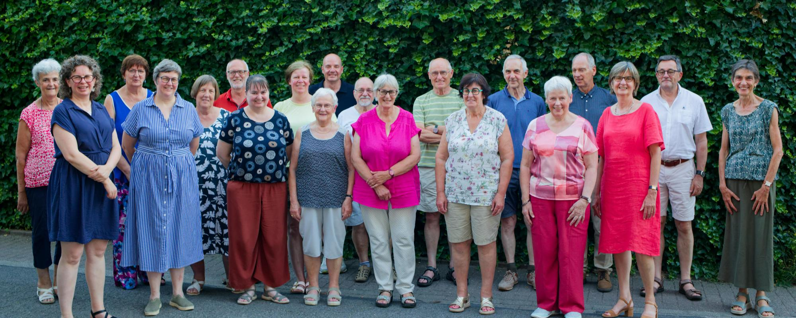

Samen om met passie en plezier te zingen.
Het Ceciliakoor was in 2020 tachtig jaar actief en was het grootste deel van die tijd verbonden aan de Christus Koningparochie te Sint-Niklaas. Jules Van Bastelaere en Michel Pieters richtten een mannenkoor op dat uitgroeide tot een volwaardig gemengd koor, dat vooral bekendheid verwierf door de jaarlijkse uitvoering van de Johannespassie van J.S. Bach. Momenteel telt het koor ongeveer vijfentwintig leden.
Jaarlijks geeft het Ceciliakoor een eigen concert, vaak in samenwerking met instrumentale en vocale ensembles. Ze namen deel aan de rockopera Jesus Christ Superstar en het project De grooten oorlog. Maar ook aan beide Freedomprojecten in Antwerpen en Sint-Niklaas en de daaruit gegroeide reeks XMAS XL. Ondertussen zette het koor zijn Bach-passietraditie voort met de Johannespassion, de Markuspassion en de Lukaspassion, telkens in samenwerking met de Capella Vocale. Verder organiseerde het koor nog themaconcerten, waaronder J'aime la vie, Talbot House, een Scandinavisch getinte kerstevocatie, en dit jaar OudOpNieuw.
Het koor verzorgt huwelijken, begrafenissen en eucharistievieringen op hoogdagen.

